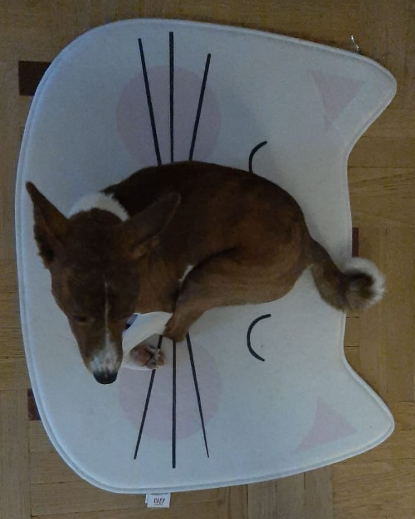

2025-й год: люди перестали ездить на личных машинах в связи с глобальными эпидемиями и развитием службы доставки. В то же время люди стали заводить больше собак: во-первых, собаки снижают тревожность, во-вторых, выгуливают хозяев (что оказывает положительное воздействие на здоровье хозяев). Автомобильные журналы в поисках новых тем перешли на описание разновидностей домашних питомцев. Эта статья – первая в новом тренде.
Хочу рассказать вам, дорогие друзья, про опыт трёхлетней эксплуатации собаки породы басенджи. Сразу отвечу на вопрос "сколько жрёт? / сколько прёт?". Приблизительно 12 кг сухого корма уходит на взрослую собаку на 3 месяца. Собака сухой массой 9 кг (на шлейке, безусловно) может везти санки с детьми 4-х и 7-ми лет, правда, недалеко.
Когда рассказываешь другим про последствия эксплуатации, у всех возникает один и тот же вопрос: зачем ты завёл это? Ну, до этого у меня была охотничья лайка, и я подумал, что хуже уже не будет. Нет, не то чтобы было хуже. Как в известном меме: "он делает больно по-другому". Обратимся к причинам: безусловно, это характер. Собака себе на уме, кроме того, отличается мстительностью. Если что-то сделать не так, может нассать в тапки или найти и погрызть то, чем её дразнили.
И лайка, и басенджи относятся к пятой группе "Шпицы и породы примитивного типа". Данная группа отличается сильным иммунитетом, трудностями при дрессировке и отсутствием генетических недостатков (болезней или особенностей, передающихся по наследству – если берёте собаку из питомника). Но независимость и своеволие басенджи ставит их ближе к кошкам, чем к лайкам. Хотя нет, у меня было две кошки, они намного послушнее. Кобели басенджи достаточно агрессивны и бросаются на других кобелей любого размера (чем крупнее, тем лучше).
Собака требует выгула без поводка, поэтому получается замкнутый круг: вы не можете её отпустить, потому что она не слушается и бросается на других. А она не выгуливается на поводке и начинает пакостить дома, потому что энергия не израсходована. При этом даже не все кинологи возьмутся дрессировать до такой степени, чтобы собака могла спокойно гулять без поводка. Мы нашли выход в обучении у одного (не)популярного кинолога. Можно сказать, наш Орбит прошёл армию, после которого у него появился стержень и хоть какое-то послушание.
Собака является полноценным членом семьи, так как внимания требует наравне с ребёнком и даже больше. При этом она не подходит для игры с детьми, так как может огрызаться и кусать детей. Да, таковы были собаки 3000 лет назад.
Интересной особенностью является то, что собака любит спать рядом с хозяином. Вы хотите спросить: что, он ещё и прётся в постель? Да, это так, но в целом подогрев (нормальная температура собаки 38-39 градусов) достаточно приятный.
На этом всё с минусами, пройдёмся кратко по плюсам:
- ми-ми-мишность: 9/10
- предпочитает не лаять
- короткая шерсть, мало линяет, но в зимний период требуется тюнинг в виде курточки
- если вы сторонник активного образа жизни, собака его поддержит и быстро не устанет
- гон один раз в году, да и в этот период поведение не сильно меняется
- интересно находить общий язык (как с кошкой), никакого подчинения по умолчанию нет
- из урона был один угол плинтуса и несколько сапог (вышедших из моды, что подозрительно)
Фото прилагаются.
Псина прекрасно впишется в ваш лакшери-интерьер.
Зимой требуется тюнинг в виде курточки.

В целом собачка довольно милая, хоть и с противным характером.
Комментарии